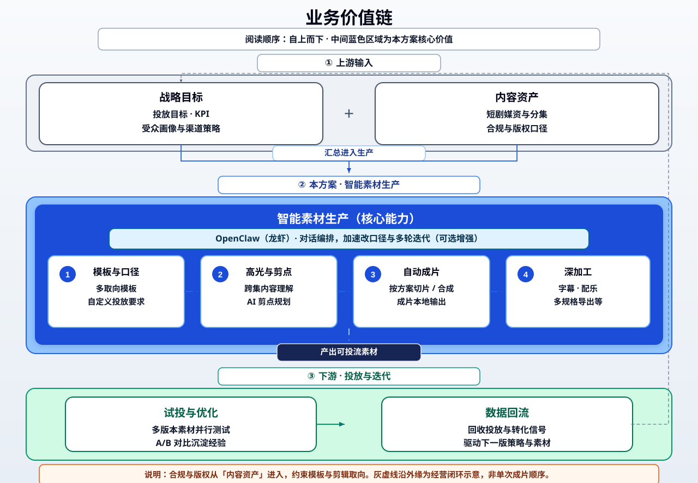
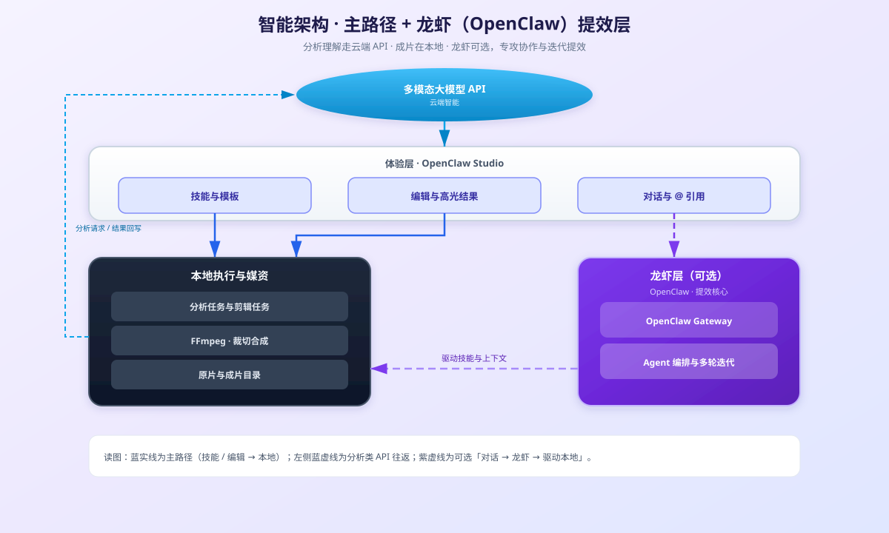
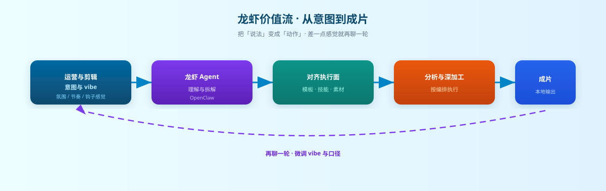
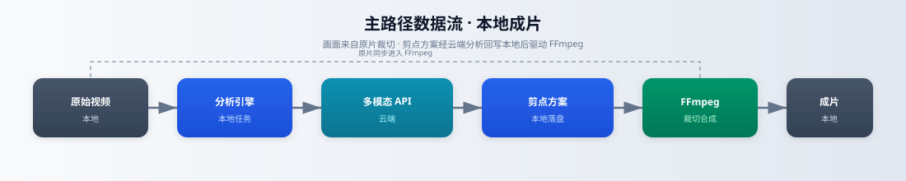

短剧投流智能剪辑解决方案
本页为汇报专用：OpenClaw（口语「龙虾」）与 Vibe Filmmaking 说明 + Mermaid 动态图（需 CDN）。文末附 高清 SVG 矢量图，本地相对路径加载，离线可展示，亦可单独插入 PPT。
OpenClaw 与 Vibe Filmmaking
OpenClaw 在本方案中是 可选的智能编排层：经 OpenClaw Gateway（WebSocket，常见端口 18789）连接桌面端对话面板与 AI Agent，负责多轮对话、工具与技能（Skills）编排。主路径「高光分析 + 本地 FFmpeg 成片」可不依赖 OpenClaw 独立完成。
OpenClaw 编排关系（可选路径）
当客户环境启用 OpenClaw 时，创作者意图经 Gateway 进入 Agent，再驱动技能与本地任务；未启用时仅走中间栏剪辑与脚本调度。
flowchart TB
subgraph people ["创作与运营"]
U1["自然语言意图与 vibe 描述"]
U2["业务审核与定稿"]
end
subgraph desktop ["OpenClaw Studio 桌面端"]
UI["三栏工作台与 @ 引用"]
IPC["系统编排与任务调度"]
UI --> IPC
end
subgraph openclaw ["OpenClaw 层 可选"]
GW["OpenClaw Gateway"]
AG["Agent 推理与工具选择"]
GW <--> AG
end
subgraph exec ["执行与媒资"]
SK["Skills 技能库语义与配置"]
PY["Python 与 FFmpeg 本地执行"]
AS["本地媒资与成片目录"]
SK --> PY
PY --> AS
end
people --> UI
UI <-->|"WebSocket 可选"| GW
IPC --> PY
AG --> SK
AG -.->|"建议与说明"| UI
U2 --> U1
氛围驱动闭环（Vibe Loop）
从「气质对齐」到「可投放成片」的抽象闭环；其中分析、剪辑与 Agent 对话可在产品上组合使用。
flowchart LR
V0["对齐 vibe 与渠道假设"]
V1["模板与提示词或对话迭代"]
V2["高光分析与剪点方案"]
V3["本地成片与日志"]
V4["试投反馈与下一版 vibe"]
V0 --> V1
V1 --> V2
V2 --> V3
V3 --> V4
V4 -.->|"策略回流"| V0
业务价值链架构
本方案位于智能素材生产中段，承接战略与内容资产，服务投放与运营闭环。
flowchart TB
subgraph strategy ["战略与增长"]
G1["投放目标与 KPI"]
G2["受众与渠道策略"]
end
subgraph content ["内容与版权"]
C1["短剧媒资与分集管理"]
C2["版权与合规口径"]
end
subgraph production ["智能素材生产"]
P1["多取向模板与自定义要求"]
P2["跨集高光分析与剪点规划"]
P3["自动切片与成片合成"]
P4["可选深加工能力"]
end
subgraph ops ["投放与运营"]
O1["多版本试投与 A B 测试"]
O2["数据回流与素材迭代"]
end
strategy --> production
content --> production
production --> ops
ops -.->|"策略反馈"| strategy
C2 -.->|"合规约束"| P1
产品功能架构
核心剪辑闭环、技能中心、协作域与媒资交付域的关系。
flowchart TB
subgraph coreDomain ["核心剪辑域"]
U1["素材与目录"]
U2["模板与自定义要求"]
U3["高光分析与结果可视"]
U4["一键成片与日志"]
end
subgraph skillDomain ["技能中心"]
S1["技能浏览与说明"]
S2["内置与导入 Skills"]
end
subgraph collabDomain ["协作域 含 OpenClaw"]
A1["Agent 对话面板"]
A2["资源引用与上下文"]
end
subgraph assetDomain ["媒资与交付"]
D1["输入分集视频"]
D2["结构化剪点方案"]
D3["输出成片与衍生文件"]
end
coreDomain --> assetDomain
skillDomain --> coreDomain
collabDomain --> coreDomain
collabDomain --> skillDomain
技术分层架构
体验层、编排层、媒体工程层、智能服务层与本地数据层。
flowchart TB
subgraph experience ["体验层"]
E1["三栏工作台"]
E2["模板与提示词管理"]
E3["分析结果与时间轴展示"]
E4["对话与资源引用"]
end
subgraph orchestration ["编排与系统层"]
O1["前后端通信与安全桥接"]
O2["技能元数据与导入管理"]
O3["本地任务调度"]
O4["OpenClaw Gateway 客户端"]
end
subgraph media ["媒体工程层"]
M1["视频分析引擎"]
M2["剪辑与合成引擎"]
M3["FFmpeg 媒体处理"]
M4["其他技能本地任务"]
end
subgraph intelligence ["智能服务层"]
I1["多模态大模型 API"]
I2["OpenClaw Agent 服务 可选"]
end
subgraph data ["数据与资产层"]
D1["原始分集视频目录"]
D2["结构化高光与剪点方案"]
D3["输出成片与运行日志"]
end
experience --> orchestration
orchestration --> media
orchestration --> intelligence
media --> M3
M1 --> I1
O4 --> I2
media <--> data
experience <--> data
部署与网络拓扑
本地媒资与成片；出网访问多模态 API；可选 WebSocket 连接 OpenClaw Gateway。
flowchart TB
subgraph customer ["客户环境"]
PC["终端设备"]
APP["OpenClaw Studio"]
LOCAL["本地媒资与成片目录"]
PY["Python 任务与 FFmpeg"]
PC --> APP
APP --> LOCAL
APP --> PY
PY --> LOCAL
end
subgraph network ["网络边界"]
OUT["受控出网通道"]
end
subgraph cloud ["云端与可选服务"]
API["多模态大模型 API"]
GW["OpenClaw Gateway 可选"]
end
APP --> OUT
PY --> OUT
OUT --> API
OUT -.->|"WebSocket 可选"| GW
主路径数据流
成片画面来自原片；剪点方案经模型生成后在本地驱动 FFmpeg。
flowchart LR
V1["原始视频 本地"]
V2["分析引擎"]
V3["多模态 API"]
V4["剪点方案 本地"]
V5["FFmpeg 引擎"]
V6["成片输出 本地"]
V1 --> V2
V2 --> V3
V3 --> V4
V4 --> V5
V1 --> V5
V5 --> V6
端到端业务时序（主路径）
不强制经过 OpenClaw 的标准生产路径。
sequenceDiagram
participant Biz as 业务运营
participant User as 操作员
participant App as OpenClaw Studio
participant AI as 多模态 API
participant FF as FFmpeg
Biz->>User: 投放取向与合规要求
User->>App: 选择目录与模板或自定义要求
User->>App: 启动分析
App->>AI: 视频与提示词按策略传输
AI-->>App: 结构化高光与剪点方案
App-->>User: 展示结果与时间信息
User->>Biz: 审核与确认
User->>App: 启动剪辑
App->>FF: 按方案切片与合成
FF-->>App: 成片与日志
App-->>User: 输出路径与预览
可选 Agent 协作时序（Vibe 迭代）
启用 OpenClaw 时，自然语言与 @ 引用可触发多轮编排；具体工具链以实际版本为准。
sequenceDiagram
participant User as 创作者或运营
participant App as Studio 客户端
participant GW as OpenClaw Gateway
participant Agent as AI Agent
participant Skills as 技能与脚本层
participant API as 多模态 API
User->>App: 描述 vibe 与策略并引用资源
App->>GW: WebSocket 会话与上下文
GW->>Agent: 推理与工具规划
Agent-->>GW: 调用建议与说明
GW-->>App: 流式响应与工具状态
App->>Skills: 触发分析与剪辑等任务
Skills->>API: 按需请求多模态分析
API-->>Skills: 结构化结果
Skills-->>App: 日志与输出路径
App-->>User: 可继续对话微调 vibe
业务价值链（矢量图）
文件：svg/01-business-value-chain.svg — 渐变与阴影已内嵌，适合印刷与 Keynote。

智能架构 · 主路径 + 龙虾层（矢量图）
文件：svg/02-smart-architecture-lobster.svg

龙虾价值流（矢量图）
文件：svg/03-lobster-value-flow.svg

主路径数据流（矢量图）
文件：svg/04-main-data-pipeline.svg
